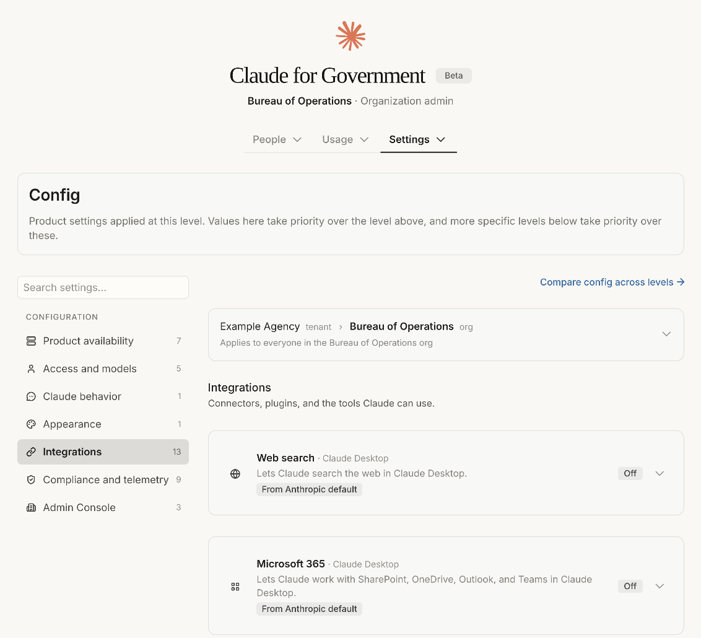
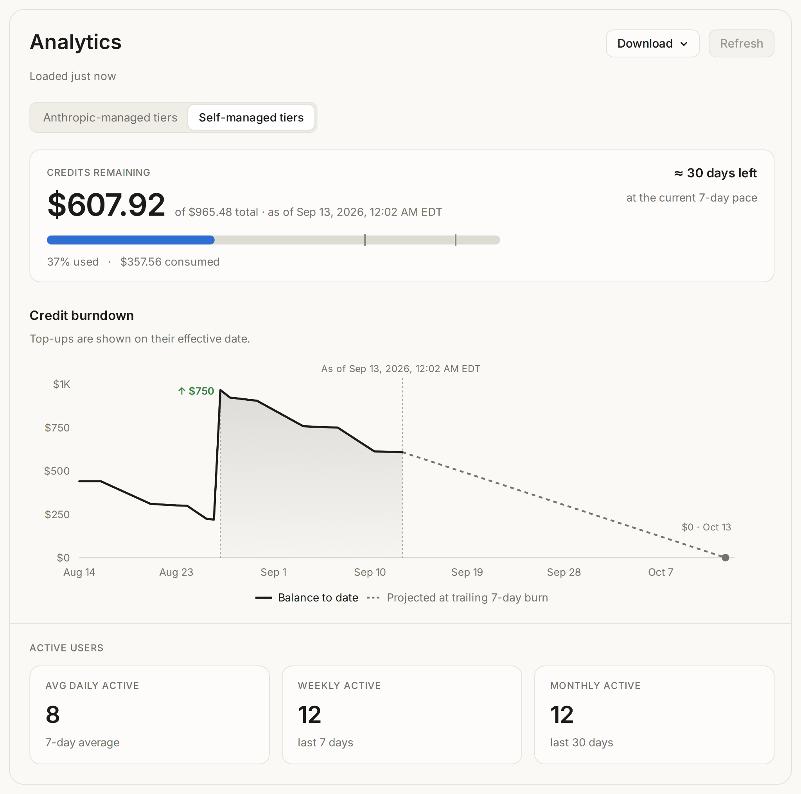

Today, Claude for Government is generally available for federal and state agencies. The platform, which delivers Claude's coding and agentic work capabilities through a FedRAMP High authorized environment, has been in public beta since July.
Agencies access capabilities comparable to Anthropic’s commercial customers, without compromising compliance requirements. New capabilities generally arrive on the commercial release cadence.
Claude works directly with files on the desktop, allowing agency staff to use skills, plugins and projects for memo creation, RFP reviews, casework, and other tasks. With Claude Code, public sector teams can build and modernize the software systems that underpin public services.
Claude for Government governance controls are purpose-built for public sector agencies. Administrators can set configuration defaults as well as allocate and control spending across departments. Security teams and authorizing officials get audit logs and documentation that supports the agency ATO process. Procurement officers can contract with Anthropic directly and award on general-availability terms.
The Claude Code command-line interface and Claude for Microsoft 365 are also rolling out in early access through the same environment and with the same administrative controls.

Billing, administration, and oversight
No seat fees. Agencies pay for usage in fixed increments with a hard not-to-exceed cap, so spend does not exceed what an agency has obligated. Administrators define user tiers with spend and model limits per group, track usage by user and by model, and get burndown alerts before a balance runs low.

Administration that matches how departments are organized. Department-level administrators allocate prepaid usage to sub-agencies while each manages its own users. Agencies connect their own identity provider for single sign-on, with self-serve setup in the admin portal. SCIM group mappings set rate limits, dollar caps, and allowed models for each seat tier. Layered configuration sets defaults for sub-agencies, including what Claude can connect to and which features are available.
Oversight by design. Administrative actions are recorded in an audit log that organization administrators can review. Sensitive operations on Anthropic's side require two-person approval. Usage exports are metering data only, so agencies can answer ATO and IG requests without moving sensitive material. Conversation history stays local on the agency-managed device.
Getting started
Claude for Government is generally available to federal and state agencies today. Agencies do not need a separate cloud-provider relationship to get started. Existing customers can move to the desktop application and bring their conversation history with them through an in-app import.
Our FedRAMP Secure Configuration Guide is available through Anthropic's trust center. The application deploys through standard agency MDM platforms.
New agencies can request access at claude.com/solutions/government. To join the early access for Claude Code CLI or Claude for Microsoft 365, contact our public sector team.